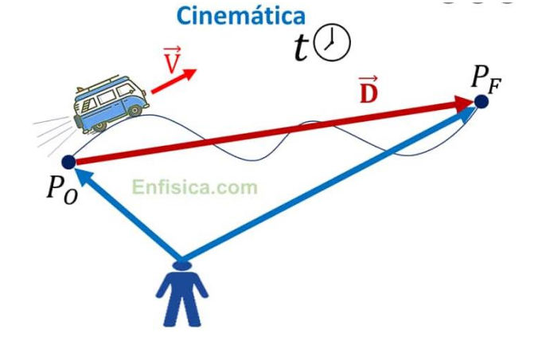
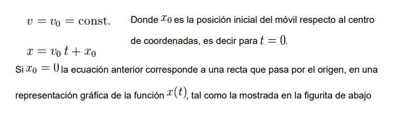

En física, se conoce como mecánica al estudio y análisis del movimiento y reposo de los cuerpos, así como su evolución temporal bajo la acción de una o varias fuerzas. Su nombre proviene del latín mecánica, que significa “el arte de construir máquinas”. También son de interés de la mecánica las dinámicas de los sistemas físicos, como campos electromagnéticos o sistemas de partículas, a pesar de que no se puedan considerar propiamente cuerpos. Tal y como el resto de la física, esta disciplina toma en préstamo de las matemáticas su lenguaje formal para expresar sus contenidos y, al mismo tiempo, sienta las bases para la mayoría de los conocimientos de la ingeniería clásica.
La mecánica es el área de la física que se ocupa del estudio del movimiento de objetos macroscópicos. Las distintas fuerzas que pueden aplicarse a los objetos resultan en desplazamientos o cambios en la posición de un objeto.
Interacción de engranes: Cuando una caja reductora o amplificadora funciona, en su interior hay un proceso mecánico debido a los ejes y engranes, esto es parte de la mecánica en la física.
Una montaña rusa: La interacción de sus elementos mecánicos y los cambios de velocidad y posiciones de los juegos de atracción son parte de la mecánica.
Sistemas de polea y correa: Es común observar en los carros un sistema de poleas, en donde existen cadenas y correas, estas permiten una trasmisión de potencia y en algunos casos producción de energía, esto es parte de la mecánica.
Esta es la rama de la física que estudia las leyes del movimiento de los cuerpos sin considerar las causas que lo originan (las fuerzas) y se limita, esencialmente, al estudio de la trayectoria en función del tiempo. La aceleración es el ritmo con el que cambia la velocidad. La velocidad y la aceleración son las dos principales magnitudes que describen cómo cambia la posición en función del tiempo.
Los primeros en intentar describir el movimiento fueron los astrónomos y los filósofos griegos. Hacia 1605, Galileo Galilei hizo sus famosos estudios del movimiento de caída libre y de esferas en planos inclinados a fin de comprender aspectos del movimiento relevantes en su tiempo, como el movimiento de los planetas y de las balas de cañón. Posteriormente, el estudio de la cicloide realizado por Evangelista Torricelli (1608-1647) fue configurando lo que se conocería como geometría del movimiento.
Luego las aportaciones de Nicolás Copérnico, Tycho Brahe y Johannes Kepler expandieron los horizontes en la descripción del movimiento durante el siglo XVI. En el 1687, con la publicación de la obra titulada Principia, Isaac Newton hizo la mayor aportación conocida al estudio sistemático del movimiento. Isaac Newton (1642 - 1727) fue un físico y matemático inglés, considerado una de las mentes más brillantes en la historia de la ciencia. Entre otros numerosos aportes, estableció las tres leyes del movimiento que llevan su nombre, contribuyendo así al campo de la dinámica, y también postuló la Ley de gravitación universal.
El nacimiento de la cinemática moderna tiene lugar con la alocución de Pierre Varignon el 20 de enero de 1700 ante la Academia Real de las Ciencias de París. Fue allí cuando definió la noción de aceleración y mostró cómo es posible deducirla de la velocidad instantánea utilizando un simple procedimiento de cálculo diferencial. En la segunda mitad del siglo XVIII se produjeron más contribuciones por Jean Le Rond d'Alembert, Leonhard Euler y André-Marie Ampère y continuaron con el enunciado de la ley fundamental del centro instantáneo de rotación en el movimiento plano, de Daniel Bernoulli (1700-1782).
El vocablo cinemático fue creado por André-Marie Ampère (1775-1836), quien delimitó el contenido de esta disciplina y aclaró su posición dentro del campo de la mecánica. Desde entonces y hasta la actualidad la cinemática ha continuado su desarrollo hasta adquirir una estructura propia. Con la teoría de la relatividad especial de Albert Einstein en 1905 se inició una nueva etapa, la cinemática relativista, donde el tiempo y el espacio no son absolutos, y sí lo es la velocidad de la luz.
Los elementos básicos de la cinemática son el espacio, el tiempo y un móvil. En la mecánica clásica se admite la existencia de un espacio absoluto, es decir, un espacio anterior a todos los objetos materiales e independiente de la existencia de estos. Este espacio es el escenario donde ocurren todos los fenómenos físicos, y se supone que todas las leyes de la física se cumplen rigurosamente en todas las regiones de este. El espacio físico se representa en la mecánica clásica mediante un espacio euclidiano.
Análogamente, la mecánica clásica admite la existencia de un tiempo absoluto que transcurre del mismo modo en todas las regiones del Universo y que es independiente de la existencia de los objetos materiales y de la ocurrencia de los fenómenos físicos.
El móvil más simple que se puede considerar es el punto material o partícula; cuando en la cinemática se estudia este caso particular de móvil, se denomina cinemática de la partícula, y cuando el móvil bajo estudio es un cuerpo rígido se lo puede considerar un sistema de partículas y hacer extensivos análogos conceptos; en este caso se le denomina cinemática del sólido rígido o del cuerpo rígido.
La cinemática trata del estudio del movimiento de los cuerpos en general y, en particular, el caso simplificado del movimiento de un punto material, mas no estudia por qué se mueven los cuerpos. Para sistemas de muchas partículas, por ejemplo, los fluidos, las leyes de movimiento se estudian en la mecánica de fluidos. El movimiento trazado por una partícula lo mide un observador respecto a un sistema de referencia.
Desde el punto de vista matemático, la cinemática expresa cómo varían las coordenadas de posición de la partícula (o partículas) en función del tiempo. La función matemática que describe la trayectoria recorrida por el cuerpo (o partícula) depende de la velocidad (la rapidez con la que cambia de posición un móvil) y de la aceleración (variación de la velocidad respecto del tiempo).
La tecnología hoy en día nos ofrece muchas formas de registrar el movimiento efectuado por un cuerpo. Así, para medir la velocidad de los vehículos se dispone del radar de tráfico cuyo funcionamiento se basa en el efecto Doppler. El tacómetro es un indicador de la velocidad de un vehículo basado en la frecuencia de rotación de las ruedas. Los caminantes disponen de podómetros que detectan las vibraciones características del paso y, suponiendo una distancia media característica para cada paso, permiten calcular la distancia recorrida. El vídeo, unido al análisis informático de las imágenes, permite igualmente determinar la posición y la velocidad de los vehículos.
Es aquel en el que el móvil describe una trayectoria en línea recta, En cinemática, trayectoria es el lugar geométrico de las posiciones sucesivas por las que pasa un cuerpo en su movimiento. La trayectoria depende del sistema de referencia en el que se describa el movimiento; es decir el punto de vista del observador.
En este movimiento la velocidad permanece constante y no hay una variación de la aceleración (a) en el transcurso del tiempo. Esto corresponde al movimiento de un objeto lanzado en el espacio fuera de toda interacción, o al movimiento de un objeto que se desliza sin fricción. Siendo la velocidad v constante, la posición variará linealmente respecto del tiempo, según la ecuación:
En la relatividad, lo que es absoluto es la velocidad de la luz en el vacío, no el espacio o el tiempo. Todo observador en un sistema de referencia inercial no importa su velocidad relativa, va a medir la misma velocidad para la luz que otro observador en otro sistema. Esto no es posible desde el punto de vista clásico. Las transformaciones de movimiento entre dos sistemas de referencia deben tener en cuenta este hecho, de lo que surgieron las transformaciones de Lorentz. En ellas se ve que las dimensiones espaciales y el tiempo están relacionadas, por lo que en relatividad es normal hablar del espacio-tiempo y de un espacio cuatridimensional.
La Cinemática es un caso especial de geometría diferencial de curvas, en el que todas las curvas se parametrizan de la misma forma: con el tiempo. Para el caso relativista, el tiempo coordenado es una medida relativa para cada observador, por tanto, se requiere el uso de algún tipo de medida invariante como el intervalo relativista o equivalentemente para partículas con masa el tiempo propio. La relación entre el tiempo coordenado de un observador y el tiempo propio viene dada por el factor de Lorentz.